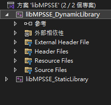
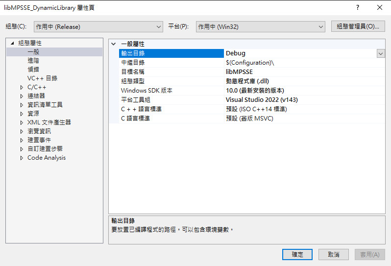
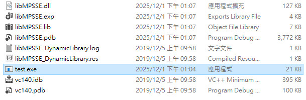
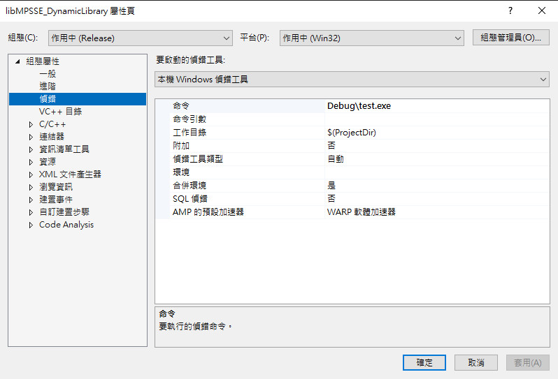
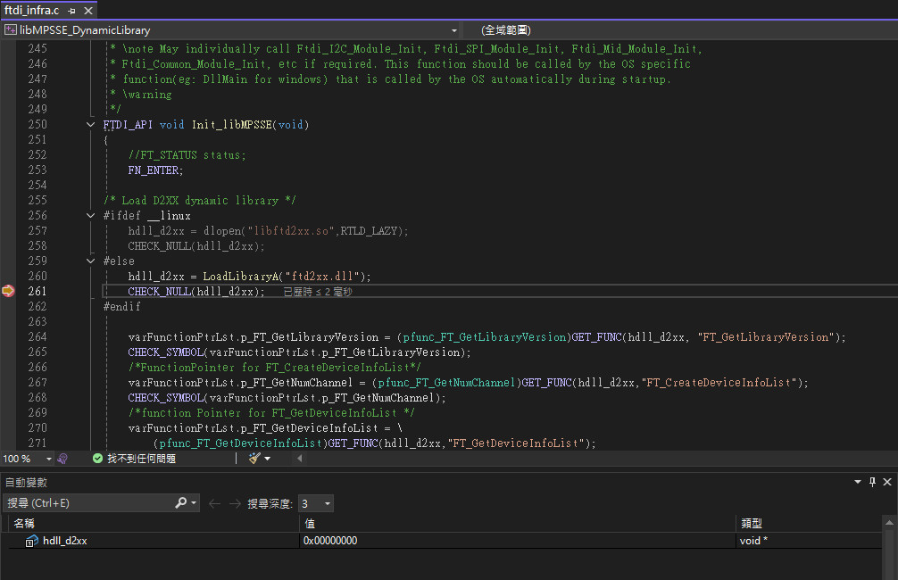
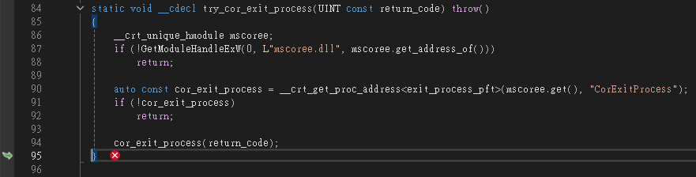
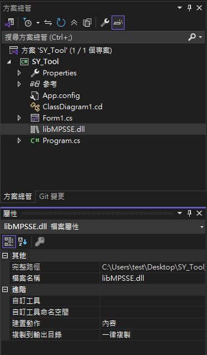
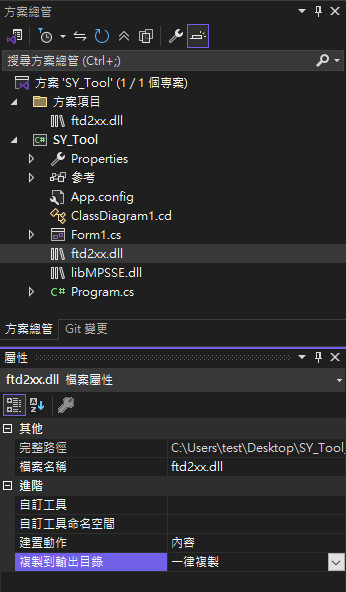

參考資訊：
https://ftdichip.com/drivers/d2xx-drivers/
https://ftdichip.com/software-examples/mpsse-projects/libmpsse-spi-examples/
程式碼
private void Main_Form_Load(object sender, EventArgs e)
{
myFTDI.Init_libMPSSE();
}
問題如下：
進入Init_libMPSSE()後，程式無法往下繼續執行
解法如下：
1. 下載LibMPSSE Source V0.6(libMPSSE_Source.zip)
2. 開啟libMPSSE__0-6_Source\LibMPSSE\Build\Windows\VisualStudio\libMPSSE.sln
3. 將libMPSSE_DynamicLibrary設定成啟動專案







